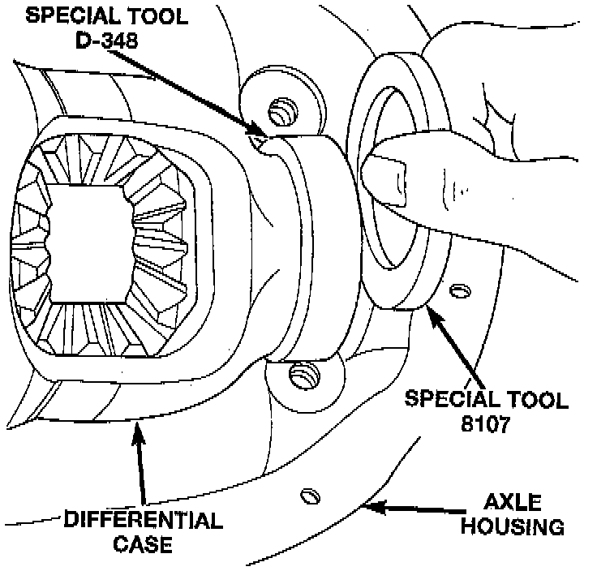
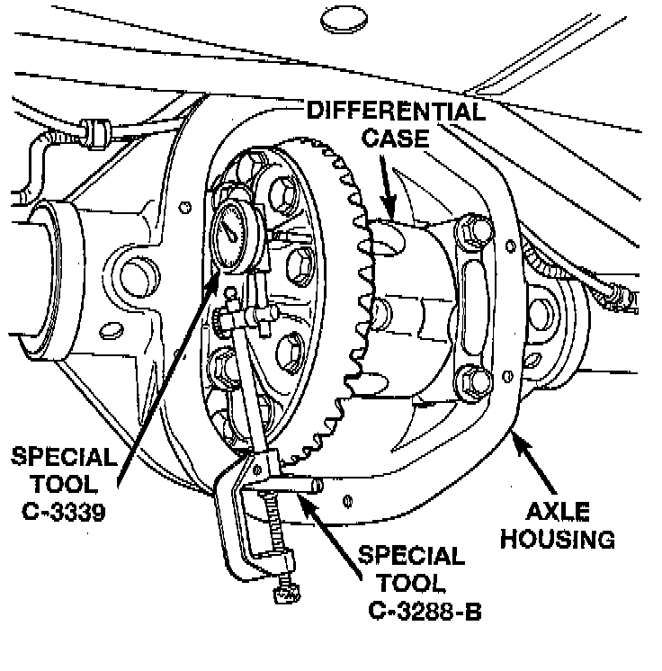
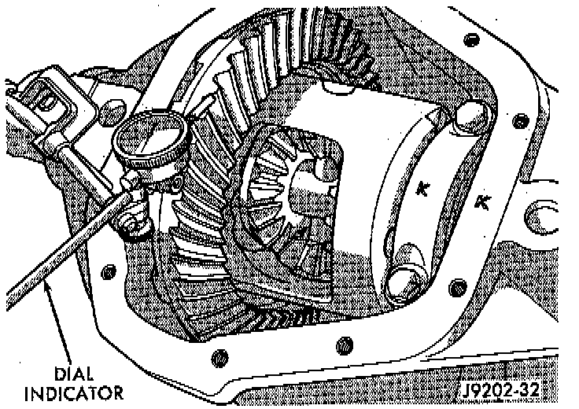
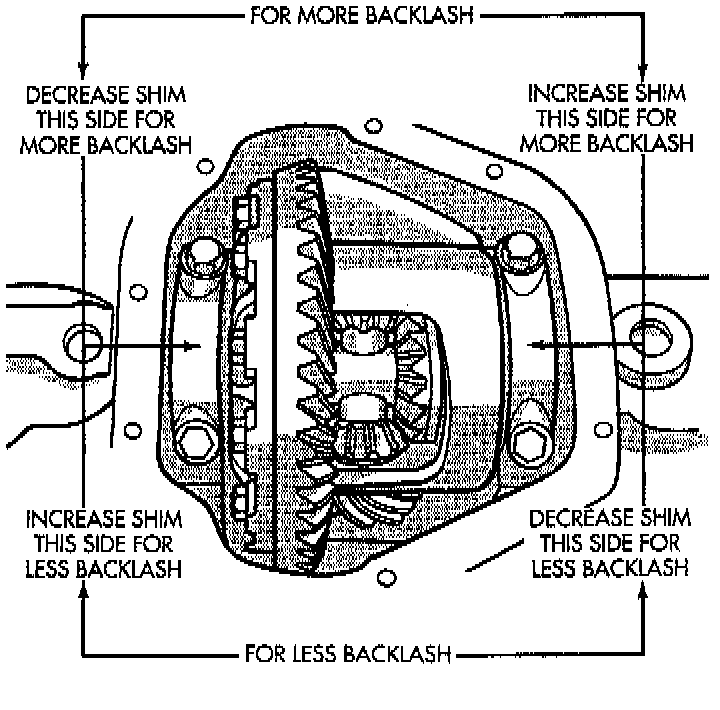

Differential Preload and Gear Backlash Shim Selection
NOTE: It is difficult to salvage the differential side bearings during the removal procedure. Install replacement bearings if necessary.1. Remove side bearings from differential case.
2. Install ring gear, if necessary, on differential case and tighten bolts to specification.
3. Install dummy side bearings D-348, or equivalent on differential case.
4. Install differential case in axle housing.

5. Insert Dummy Shims 8107, or equivalent, 0.118 inch (3.0 mm) starting point shims between the dummy bearing and the axle housing.
6. Install the marked bearing caps in their correct positions. Install and tighten the bolts.

7. Thread guide stud C-3288-B, or equivalent into rear cover bolt hole below ring gear.
8. Attach dial indicator C-3339, or equivalent to guide stud. Position the dial indicator plunger on a flat surface on a ring gear bolt head.
9. Push firmly and hold differential case to pinion gear side of axle housing.
10. Zero dial indicator face to pointer.
11. Push firmly and hold differential case to ring gear side of the axle housing.
12. Record dial indicator reading.
13. Add the dial indicator reading to the Starting point shim thickness to determine total shim thickness to achieve zero differential end play.
14. Add 0.008 inch (0.2 mm) to the zero end play total. This new total represents the thickness of shims to compress, or preload the new bearings when the differential is installed.
15. Rotate dial indicator out of the way on guide stud.
16. Remove differential case, dummy bearings, and starting point shims from axle housing.
17. Install pinion gear in axle housing. Install the yoke and establish the correct pinion rotating torque.
18. Install differential case and dummy bearings in axle housing (without shims) and tighten retaining cap bolts.
19. Position the dial indicator plunger on a flat surface between the ring gear bolt heads.
20. Push and hold differential case toward pinion gear.
21. Zero dial indicator face to pointer.
22. Push and hold differential case to ring gear side of the axle housing.
23. Record dial indicator reading.
24. Subtract 0.002 inch (0.05 mm) from the dial indicator reading to compensate for backlash between ring and pinion gears. This total is the thickness of shim required to achieve proper backlash.
25. Subtract the backlash shim thickness from the total preload shim thickness. The remainder is the shim thickness required on the pinion side of the axle housing.
26. Rotate dial indicator out of the way on guide stud.
27. Remove differential case and dummy bearings from axle housing.
28. Install new side bearing cones and cups on differential case.
29. Install spreader W-129-B, or equivalent, utilizing some components of Adapter Set 6987, on axle housing and spread axle opening enough to receive differential case.
30. Place side bearing shims in axle housing against axle tubes.
31. Install differential case in axle housing.
32. Rotate the differential case several times to seat the side bearings.

33. Position the indicator plunger against a ring gear tooth.
34. Push and hold ring gear upward while not allowing the pinion gear to rotate.
35. Zero dial indicator face to pointer.

36. Push and hold ring gear downward while not allowing the pinion gear to rotate. Dial indicator reading should be between 0.12 mm (0.005 inch) and 0.20 mm (0.008 inch). If backlash is not within specifications transfer the necessary amount of shim thickness from one side of the differential housing to the other.
37. Verify differential case and-ring gear runout by measuring ring to pinion gear backlash at several locations around the ring gear. Readings should not vary more than 0.05 mm (0.002 inch). If readings vary more than specified, the ring gear or the differential case is defective. After the proper backlash is achieved, perform the Gear Contact Pattern Analysis procedure.